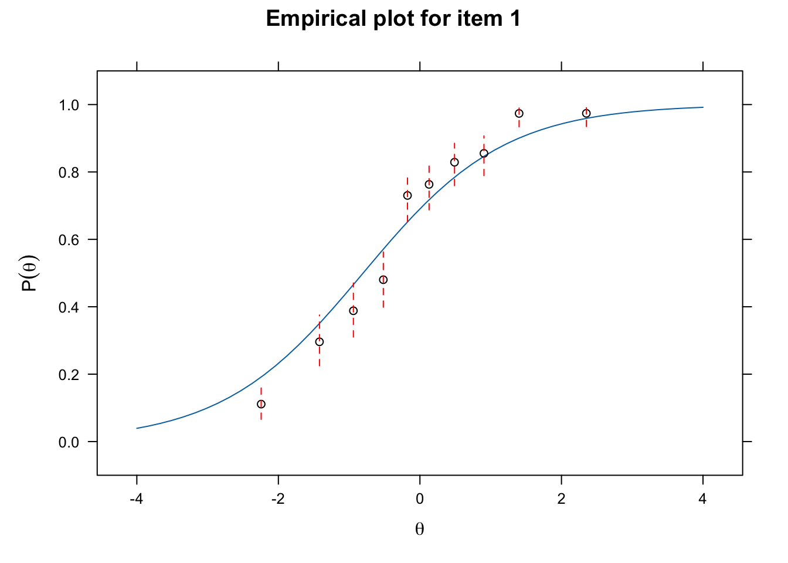

library(hemp)
data(SAPA)
?SAPASynthetic Aperture Personality Assessment (SAPA)
To learn more about this data you can use the R help function after loading the hemp package as follows,
and you can also go the the SAPA website at https://www.sapa-project.org/.
You should spend some time familiarizing yourself with the data, a process you should be able to do on your own.
str(SAPA)'data.frame': 1525 obs. of 16 variables:
$ reason.4 : num 0 0 0 1 0 1 1 0 1 1 ...
$ reason.16: num 0 0 1 0 1 1 1 1 1 1 ...
$ reason.17: num 0 1 1 0 1 1 1 0 0 1 ...
$ reason.19: num 0 0 0 0 0 1 1 0 1 1 ...
$ letter.7 : num 0 1 1 0 0 1 1 0 0 0 ...
$ letter.33: num 1 0 0 0 1 1 1 0 1 0 ...
$ letter.34: num 0 1 0 1 0 1 1 0 1 1 ...
$ letter.58: num 0 0 0 0 0 1 1 0 1 0 ...
$ matrix.45: num 0 0 1 0 1 1 1 0 1 1 ...
$ matrix.46: num 0 0 1 0 1 1 1 1 0 1 ...
$ matrix.47: num 0 0 0 0 0 1 1 1 0 0 ...
$ matrix.55: num 1 0 0 0 0 0 0 0 0 0 ...
$ rotate.3 : num 0 0 0 0 0 1 1 0 0 0 ...
$ rotate.4 : num 0 0 0 0 0 1 1 1 0 0 ...
$ rotate.6 : num 0 1 0 0 0 1 1 0 0 0 ...
$ rotate.8 : num 0 0 0 0 0 0 1 0 0 0 ...summary(SAPA) reason.4 reason.16 reason.17 reason.19
Min. :0.0000 Min. :0.0000 Min. :0.0000 Min. :0.0000
1st Qu.:0.0000 1st Qu.:0.0000 1st Qu.:0.0000 1st Qu.:0.0000
Median :1.0000 Median :1.0000 Median :1.0000 Median :1.0000
Mean :0.6402 Mean :0.6982 Mean :0.6973 Mean :0.6152
3rd Qu.:1.0000 3rd Qu.:1.0000 3rd Qu.:1.0000 3rd Qu.:1.0000
Max. :1.0000 Max. :1.0000 Max. :1.0000 Max. :1.0000
NA's :2 NA's :1 NA's :2 NA's :2
letter.7 letter.33 letter.34 letter.58
Min. :0.0000 Min. :0.0000 Min. :0.0000 Min. :0.0000
1st Qu.:0.0000 1st Qu.:0.0000 1st Qu.:0.0000 1st Qu.:0.0000
Median :1.0000 Median :1.0000 Median :1.0000 Median :0.0000
Mean :0.5997 Mean :0.5712 Mean :0.6133 Mean :0.4439
3rd Qu.:1.0000 3rd Qu.:1.0000 3rd Qu.:1.0000 3rd Qu.:1.0000
Max. :1.0000 Max. :1.0000 Max. :1.0000 Max. :1.0000
NA's :1 NA's :2 NA's :2
matrix.45 matrix.46 matrix.47 matrix.55
Min. :0.0000 Min. :0.0000 Min. :0.0000 Min. :0.000
1st Qu.:0.0000 1st Qu.:0.0000 1st Qu.:0.0000 1st Qu.:0.000
Median :1.0000 Median :1.0000 Median :1.0000 Median :0.000
Mean :0.5259 Mean :0.5499 Mean :0.6139 Mean :0.374
3rd Qu.:1.0000 3rd Qu.:1.0000 3rd Qu.:1.0000 3rd Qu.:1.000
Max. :1.0000 Max. :1.0000 Max. :1.0000 Max. :1.000
NA's :2 NA's :1 NA's :2 NA's :1
rotate.3 rotate.4 rotate.6 rotate.8
Min. :0.0000 Min. :0.0000 Min. :0.0000 Min. :0.000
1st Qu.:0.0000 1st Qu.:0.0000 1st Qu.:0.0000 1st Qu.:0.000
Median :0.0000 Median :0.0000 Median :0.0000 Median :0.000
Mean :0.1937 Mean :0.2127 Mean :0.2994 Mean :0.185
3rd Qu.:0.0000 3rd Qu.:0.0000 3rd Qu.:1.0000 3rd Qu.:0.000
Max. :1.0000 Max. :1.0000 Max. :1.0000 Max. :1.000
NA's :2 NA's :2 NA's :2 NA's :1 Item Response Theory
Example of a test item:
Which of the following is an example of a chemical reaction?
A. A rainbow
B. Lightning
C. Burning wood
D. Melting snow
What must one know to answer this question?
be able to read and comprehend English
understand the question format
know the meaning of “chemical reaction”
know they can make only one choice, and how to record it
that a rainbow results from refracting light
lightning is an electric discharge
melting snow is a change of state
that burning wood is combination of the molecular structure of wood with oxygen to yield a different compound
This fairly straight-forward question is complex!
Logit Scale
A Logit is just the log odds and it is a s-shaped functional form. For IRT higher logits means a higher probability of answering a question correctly. The use of a logit scale (there are other options, such as the probit scale) allows us to do mathematical operations to results gathered from items on the nominal or ordinal scales.
Item Parameters
Item Difficulty
Each scale item has an item difficulty value represented as its location within the range of ability, which is often represented as theta (\(\theta\)). For dichotomous items, the item difficulty is defined as the point on the ability range that represents the person having a 50% chance of endorsing the item (e.g. answering it correctly). People with a higher ability (i.e. higher \(\theta\), which is on the logit scale) will have a higher likelihood of answering the item correctly, and those with lower ability will be less likely to answer it correctly. Items with higher logit values are more difficult, requiring persons to have a higher \(\theta\) to endorse the item with the same likelihood.
Item Discrimination
The item difficulty is the point on the s-curve where the slope is steepest (and also is in the middle of the curve as it is symmetrical). The logit for this location is zero. The steepness of the s-shaped curve in the middle represents the item discrimination, and the steeper the curve the better the item is at discriminating between persons higher in ability from those lower in ability. Generally, items with higher item discrimination are preferred.
1-PL IRT Model or the Rasch Model
To understand these parameters we will consider how they are related in IRT models. We will start with the simplest model known as the one parameter logistic IRT model and also as the Rasch model. The “one-parameter” is because this model only has one item parameter, namely, item difficulty. Item discrimination is assumed to be equal across items.
\[ P(Y_{ij} = 1 | \theta_j, a, b_j) = \frac{\text{exp}(Da(\theta_j - b_i))}{1 + \text{exp}(Da(\theta_j - b_i))} \]
where \(\theta_j\) is the level of the latent trait for person \(j\), \(a\) is the item discrimination parameter. The parameter \(b_i\), represents the item difficulty for item \(i\), and \(D\) is a constant, that scales the monotonic function for the logistic model onto a normal ogive model, where \(D = 1.7\).
IRT is a probabilistic model of responses to a given item based on an underlying latent ability. “A latent trait is a characteristic or ability of an individual that is not directly observable but instead must be inferred based on some aspect of a person’s performance or presentation” (Baylor et al. 2011).
The probability of item endorsement is referred to as theta (\(\theta\)), and us a is a monotonically increasing function of the latent ability.
General Assumptions Underlying Item Response Theory Models
- Unidimensionality of the latent construct
- Parallel item characteristic curves
- Local independence after considering person parameter
Let’s see this model in action with our example data
# install.packages("mirt")
library("mirt")
library("hemp")Look at the help file for mirt, and browse the vignettes.
First, we will define the model as follows:
onepl_mod <- "
F = 1 - 16
CONSTRAIN = (1 - 16, a1)
"The F represents the latent ability, and is manifested by columns 1-16 in the data. The CONSTRAIN command constrains the used items to have the same item discrimination (\(a\)). Note mirt uses \(a1\) to represent item discrimination instead of \(a\). This model object is then passed to the mirt() function as follows:
onepl_fit <- mirt(data = SAPA, model = onepl_mod,
SE = TRUE)
Iteration: 1, Log-Lik: -13494.679, Max-Change: 0.23406
Iteration: 2, Log-Lik: -13335.854, Max-Change: 0.12756
Iteration: 3, Log-Lik: -13292.524, Max-Change: 0.07878
Iteration: 4, Log-Lik: -13277.030, Max-Change: 0.05217
Iteration: 5, Log-Lik: -13270.789, Max-Change: 0.03431
Iteration: 6, Log-Lik: -13268.209, Max-Change: 0.02244
Iteration: 7, Log-Lik: -13266.529, Max-Change: 0.00847
Iteration: 8, Log-Lik: -13266.376, Max-Change: 0.00575
Iteration: 9, Log-Lik: -13266.308, Max-Change: 0.00382
Iteration: 10, Log-Lik: -13266.259, Max-Change: 0.00131
Iteration: 11, Log-Lik: -13266.255, Max-Change: 0.00084
Iteration: 12, Log-Lik: -13266.253, Max-Change: 0.00062
Iteration: 13, Log-Lik: -13266.251, Max-Change: 0.00017
Iteration: 14, Log-Lik: -13266.251, Max-Change: 0.00013
Iteration: 15, Log-Lik: -13266.251, Max-Change: 0.00009
Calculating information matrix...With the model estimated, we can save the parameters to another object, which can be useful, as there are many parameters estimated.
onepl_params <- coef(onepl_fit, IRTpars = TRUE,
simplify = TRUE)By setting IRTpars = TRUE we will get traditional IRT parameters, instead of an intercept and a slope with is the default in mirt.
\[ b_i = \frac{-d_i}{a1_i} \] where \(d\) is the intercept parameter, which represents item easiness (think CTT), \(a1_i\) is the slope parameter, which represents item discrimination, and \(b_i\) item difficulty and is the traditional IRT parameter we want.
The simplify = TRUE puts the item parameters into a data frame for ease of use.
To explore the parameters, we will look at the item parameters first. We start with looking at the first few.
onepl_items <- onepl_params$items
head(onepl_items) a b g u
reason.4 1.445587 -0.5557199 0 1
reason.16 1.445587 -0.8020747 0 1
reason.17 1.445587 -0.7980649 0 1
reason.19 1.445587 -0.4546611 0 1
letter.7 1.445587 -0.3923381 0 1
letter.33 1.445587 -0.2810892 0 1Notice that the a parameter is estimated to be 1.45 and are all the same, which makes sense in light of constraining them to be the same. The b parameter varies across items, and reflects the estimated difficulty of these items. The g parameter is the lower asymptote, or the lowest value of on the y-axis of the s-curve, which represents the guessing parameter (we will discuss later). Finally, u is the upper asymptote, or the maximum value on the y-axis of the s-curve. Again these last two parameters are not estimated here, and will be important for more complex models later.
To see the standard errors of the estimates we do the following
onepl_se <- coef(onepl_fit, printSE = TRUE)
names(onepl_se) [1] "reason.4" "reason.16" "reason.17" "reason.19" "letter.7" "letter.33"
[7] "letter.34" "letter.58" "matrix.45" "matrix.46" "matrix.47" "matrix.55"
[13] "rotate.3" "rotate.4" "rotate.6" "rotate.8" "GroupPars"plot(onepl_fit, type = "trace", which.items = 1:2)
itemplot(onepl_fit, type = "infoSE", item =1, )library("MPsychoR")
library("mirt")
data("zareki")
?zareki?zareki
zareki {MPsychoR}
Neuropsychological Test Battery for Number Processing and Calculation in Children
Description
ZAREKI-R test battery (von Aster et al., 2006) for the assessment of dyscalculia in children. Includes subsets of 8 summation and 8 subtraction items, dichotomously scored, and 2 covariates.
Usage
data("zareki")
Format
A data frame with 341 and 18 variables. Variables starting with addit are summation items, variables starting with subtr are subtraction items. class denotes elementary school class, time the time in min require to complete the test.
Example data
zarsub <- zareki[, grep("subtr", colnames(zareki))]
head(zarsub) subtr1 subtr2 subtr3 subtr4 subtr5 subtr6 subtr7 subtr8
1 1 1 1 1 1 1 0 1
2 1 1 1 1 1 1 0 1
3 1 1 0 1 1 0 0 1
4 1 1 0 1 1 0 1 1
5 1 1 0 1 1 0 0 1
6 1 1 0 1 1 1 0 0Using princals for Dimensionality Assessment
library("Gifi")
prinzar <- princals(zarsub)
plot(prinzar, main = "Zareki Loadings")library("Gifi")
prinzar <- princals(zarsub)
plot(prinzar, main = "Zareki Loadings")Horn’s Parallel Analysis
library("psych")
fa.parallel(zarsub, cor = "poly")Parallel analysis suggests that the number of factors = 3 and the number of components = 1 Item Factor Analysis (mirt package)
fitifa1 <- mirt(zarsub, 1, verbose = FALSE)
fitifa2 <- mirt(zarsub, 2, verbose = FALSE, TOL = 0.001)
anova(fitifa1, fitifa2, verbose = FALSE) AIC SABIC HQ BIC logLik X2 df p
fitifa1 2558.405 2568.959 2582.831 2619.715 -1263.202
fitifa2 2561.249 2576.422 2596.363 2649.383 -1257.625 11.155 7 0.132Rasch Model (using easiness parameter \(\beta\) instead of difficulty parameter )
\[P(x_{\nu i} = 1) = \frac{\text{exp}(\theta_\nu + \beta_i)}{1 + \text{exp}(\theta_\nu + \beta_i)}\]
Rasch Model using eRm Package
library("eRm")
fitrasch1 <- RM(zarsub)
fitrasch1 # this gives item parameter estimates only
Results of RM estimation:
Call: RM(X = zarsub)
Conditional log-likelihood: -646.9202
Number of iterations: 12
Number of parameters: 7
Item (Category) Difficulty Parameters (eta):
subtr2 subtr3 subtr4 subtr5 subtr6 subtr7
Estimate -0.7552997 1.6808330 -0.4774069 -0.280543 0.4163264 1.5508677
Std.Err 0.1619353 0.1310474 0.1515977 0.145557 0.1316531 0.1296646
subtr8
Estimate -0.1884142
Std.Err 0.1430740Rasch Model: extracting the easiness parameter estimates ($)
round(fitrasch1$betapar, 3) # easinessbeta subtr1 beta subtr2 beta subtr3 beta subtr4 beta subtr5 beta subtr6
1.946 0.755 -1.681 0.477 0.281 -0.416
beta subtr7 beta subtr8
-1.551 0.188 round(sort(-fitrasch1$betapar), 3) # difficultybeta subtr1 beta subtr2 beta subtr4 beta subtr5 beta subtr8 beta subtr6
-1.946 -0.755 -0.477 -0.281 -0.188 0.416
beta subtr7 beta subtr3
1.551 1.681 Plotting
plotPImap(fitrasch1, sorted = TRUE)Checking Goodness of Fit for the Rasch Model
We test fit by comparing subgroups
timecat <- factor(zareki$time <= median(zareki$time), labels = c("fast", "slow"))
fitLR <- LRtest(fitrasch1, timecat)fitLR
Andersen LR-test:
LR-value: 24.097
Chi-square df: 7
p-value: 0.001 Waldtest(fitrasch1, timecat)
Wald test on item level (z-values):
z-statistic p-value
beta subtr1 -0.360 0.719
beta subtr2 0.237 0.813
beta subtr3 -2.342 0.019
beta subtr4 0.730 0.465
beta subtr5 4.199 0.000
beta subtr6 -0.548 0.584
beta subtr7 -1.529 0.126
beta subtr8 -0.469 0.639Ploting to Explore GOF
plotGOF(fitLR, ctrline = list(col = "gray"), conf = list())
Refit Model without subtr5 item
fitrasch2 <- RM(zarsub[, -5])
fitLR2 <- LRtest(fitrasch2, timecat)
fitLR2
Andersen LR-test:
LR-value: 5.715
Chi-square df: 6
p-value: 0.456 plotGOF(fitLR2, ctrline = list(col = "gray"), conf = list())New difficulty parameter estimates
round(sort(-fitrasch2$betapar), 2) # Difficulty parameter estimatesbeta subtr1 beta subtr2 beta subtr4 beta subtr8 beta subtr6 beta subtr7
-2.08 -0.83 -0.54 -0.24 0.39 1.58
beta subtr3
1.72 plotjointICC(fitrasch2,
xlab = "Subtraction Trait",
main = "ICCs Subtraction Items")plotPImap(fitrasch2, sorted = TRUE)
References
Baylor, Carolyn, William Hula, Neila J Donovan, Patrick J Doyle, Diane Kendall, and Kathryn Yorkston. 2011. “An Introduction to Item Response Theory and Rasch Models for Speech-Language Pathologists.”